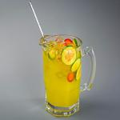
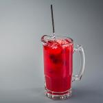
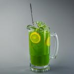

Максимально полезный напиток. Содержит экстракты трав, минералы и витамины, а кусочек лимона в форме завитка придает напитку чудесный мягкий цитрусовый аромат. «Лимонный бриз» зарядит вас энергией на весь день.

Это не традиционный чай. В нем смешаны матэ и чайные специи, а также добавлен шоколадный сироп высшего качества, что придает напитку удивительный вкус ледяного кофе.

Проблемы с памятью? Отведайте наш напиток «Подзарядка для мозга», сделанный из черного чая и небольшого количества эспрессо. Ваш мозг будет вам благодарен за подзарядку.
Заходите к нам каждый вечер и пробуйте эти и другие замечательные напитки.
Нас часто спрашивают о музыке, которая играет в зале, и это не удивительно, так как мы включаем только самое лучшее. Только для вас мы приводим здесь список композиций, который еженедельно обновляется.
Наслаждайтесь!
Заходите к нам каждый вечер поболтать и, возможно, станцевать разок-другой. Всегда обеспечен беспроводной доступ (захватите с собой свой ноутбук).
Наша гарантия: мы обязуемся оставлять у вас, наших гостей, только самые лучшие впечатления после каждого посещения гостевой. Неважно, зашли вы к нам просто проверить свою электронную почту за чашечкой чая или заказали грандиозный обед, вы увидите, что наш обслуживающий персонал обращает внимание на каждую мелочь. Если вы чем-то недовольны, отведайте наш чудо-напиток из голубики.
Вы найдёте нас в центре Webville. Если вам нужна помощь, чтобы нас найти, используете наши указатели.